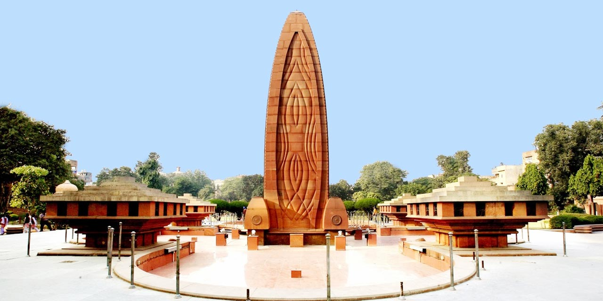

Discover Amritsar, India

The Golden Temple
The Golden Temple, also known as Sri Harmandir Sahib, is the holiest gurdwara of Sikhism. It's not just a place of worship but also a symbol of equality, where people of all religions are welcome to find peace.
Jallianwala Bagh
Jallianwala Bagh is a historical garden and memorial of national significance. It commemorates the 1919 massacre, where British troops fired on unarmed Indian civilians, leaving a deep mark in India's freedom struggle.


Wagah Border Ceremony
The Wagah Border Ceremony is a daily military practice that the security forces of India and Pakistan have jointly followed since 1959. It’s a must-see if you're in Amritsar, known for its display of patriotism and high-energy atmosphere.
Fun Facts About Amritsar
- The city was founded by Guru Ram Das, the fourth Sikh guru, in 1577.
- Amritsar is known as the "Jewel of Punjab."
- The Golden Temple serves free meals to around 50,000 to 100,000 visitors daily, regardless of their religion or background.